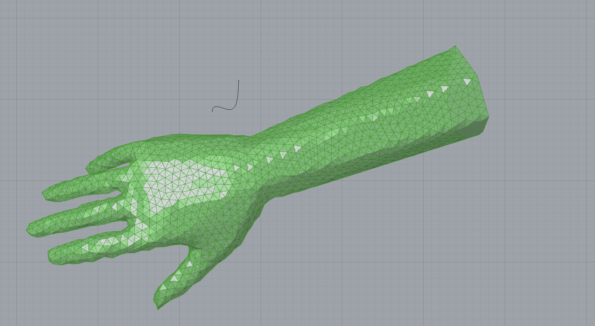
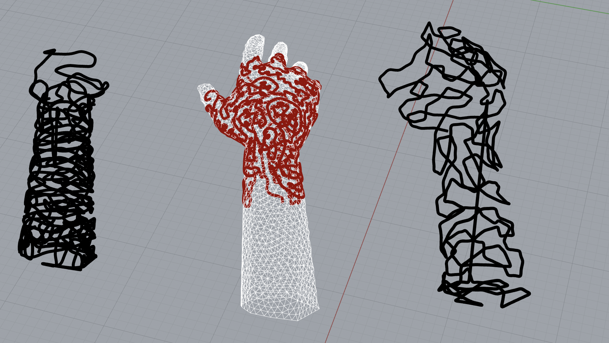

Case Study
Growth Algorithm — Parametric Simulation
A Grasshopper/Rhino simulation that generates organic, vine-like growth patterns across a 3D model surface using collision detection, bouncy solvers, and parametric optimization.
TL;DR
- Role
- Sole developer — Grasshopper definition, simulation tuning, optimization
- Duration
- Simulation Project — Rhino/Grasshopper coursework
- Tools
- Rhino 3D, Grasshopper, Bouncy Solver, Mesh Bake
- Outcome
- Working parametric simulation that grows, bakes, and exports organic mesh structures on arbitrary 3D models
Problem
Organic, vine-like structures are everywhere in nature—blood vessels, root systems, mycorrhizal networks—but they're notoriously difficult to generate procedurally in a way that respects a host surface's geometry. The goal was to build a Grasshopper definition that could take any 3D model and any seed curve, then grow a natural-looking branching structure across the model's surface, ready to export as a mesh.
Setup & Boundary Conditions
The inputs are deliberately minimal:
- A simple curve — any size or shape, acting as the growth seed.
- A 3D model (Brep) — for this simulation, a human arm model was used as the host surface.
The curve is projected onto the 3D model to establish the starting position, and the algorithm grows outward from there.
Mechanics & Rules
The simulation follows a nine-step pipeline:
- Project curve onto the 3D model (arm Brep).
- Deconstruct the Brep to extract edges and compute the average edge length — this becomes the fundamental scale unit.
- Measure and divide the curve to generate evenly spaced seed points.
- Explode the seed points into smaller line segments.
- Disperse segments using Discontinuity nodes and Collision Spheres, with
OnShapeconstraints and a number factor to keep growth attached to the model surface at random positions. - Merge and solve — feed the combined data into a Bouncy Solver for real-time simulation.
- Rebuild — connect the resulting points with a Polyline, then rebuild into a smooth curve.
- Pipe — extrude the curve into a 3D tube using Pipe with a configurable radius factor.
- Mesh and bake — convert to mesh and bake into Rhino for rendering or export.
Because the Collision Spheres introduce randomness, every run produces a unique growth pattern — the same inputs never generate the same result twice.
Optimization
The initial definition had a critical flaw: the growth algorithm frequently escaped the model surface. Lines would either fly off the Brep entirely or grow explosively until they were no longer visible in the viewport, even with OnShape constraints applied.
The fix turned out to be elegant:
By using the average of the curve instead of its full length and feeding that value back through the multiplier, the growth stays bounded and controllable.
This single change resolved the runaway-growth problem and made the results dramatically easier to control through the exposed number parameters. Post-optimization, the Grasshopper diagram is cleaner and every run produces usable results.
Results
The optimized simulation reliably produces organic mesh structures that:
- Stay on the host surface across a wide range of parameter values.
- Generate unique, visually interesting patterns on every run.
- Can be tuned via exposed number factors to produce thinner or thicker, denser or sparser growth.
- Export as clean meshes ready for rendering, 3D printing, or further modelling.
The definition works on arbitrary Breps — while the human arm was the test case, any 3D model can serve as the host surface.
Image Grid


